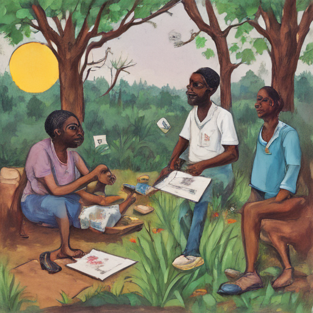

Today I decided to create a meme about DR Congo's recent melanoma research breakthrough. It turned out to be more relatable than I expected, with people from all over sharing and discussing the implications on social media. It made me realize how interconnected our global community really is.

Keywords: meme coin dinner, DR Congo, melanoma survival rates
Fictional diary entry.